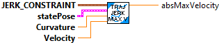

Constructs a centripetal acceleration constraint.
Parameters:
- MaxCentripitalAccel - Maximum Centripetal acceleration (meters/sec^2)
Returns
- CentripetalAccelConstraint - Constraint data structure.

Return the maximum allowed velocity given the provided conditions.
Calculation comments.
// ac = v^2 / r
// k (curvature) = 1 / r
// therefore, ac = v^2 * k
// ac / k = v^2
// v = std::sqrt(ac / k)
Parameters:
- CentripitalAccelConstraint - Constraint data structure
- statePose - current traj state Pose
- curvature - current traj curvature
- maxVelocity - current traj max velocity
Returns
- maxVelocity - Maximum allowed velocity.

Return the minimum and maximum allowed acceleration given the provided conditions.
It appears that this routine doesn't do anything. It returns default values. Note says. The acceleration of the robot has no impact on the centripetal acceleration of the robot.
Parameters:
- CentripitalAccelConstraint - Constraint data structure
- statePose - current traj state Pose
- curvature - current traj curvature
- maxVelocity - current traj max velocity
Returns
- TrajConstraint_Min_Max - Data structure with Min / Max acceleration.